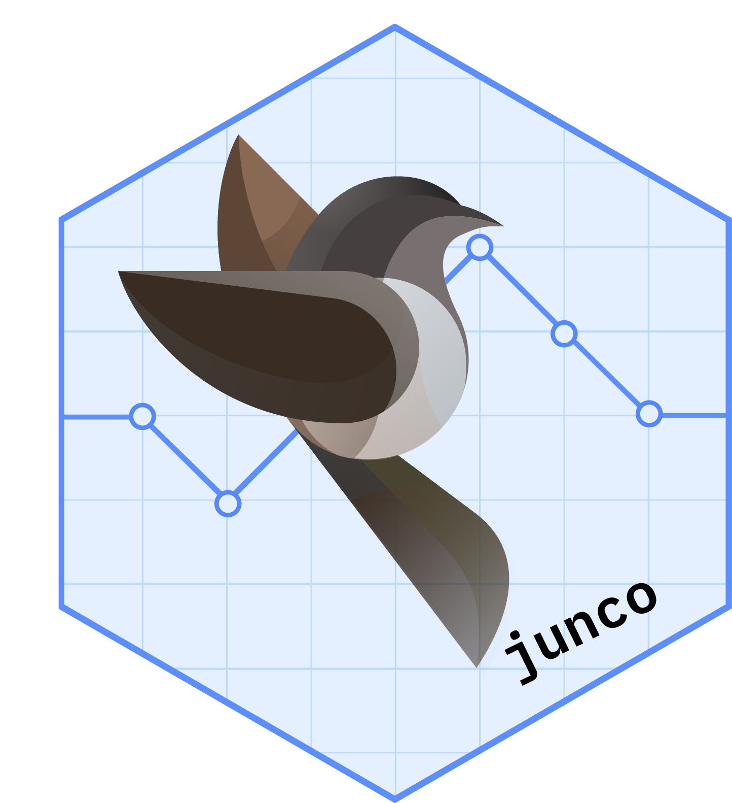

Dynamic tabulation of MMRM results with tables
Source:R/summarize_mmrm.R
summarize_mmrm.Rd![[Stable]](figures/lifecycle-stable.svg)
These functions can be used to produce tables for MMRM results, within tables which are split by arms and visits. This is helpful when higher-level row splits are needed (e.g. splits by parameter or subgroup).
Usage
s_summarize_mmrm(
df,
.var,
variables,
ref_levels,
.spl_context,
alternative = c("two.sided", "less", "greater"),
show_relative = c("reduction", "increase"),
...
)
a_summarize_mmrm(
df,
.var,
.spl_context,
...,
.stats = NULL,
.formats = NULL,
.labels = NULL,
.indent_mods = NULL
)
a_summarize_mmrm_with_exclude(
df,
.var,
exclude_levels,
.spl_context,
...,
.stats = NULL,
.formats = NULL,
.labels = NULL,
.indent_mods = NULL
)Arguments
- df
(
data.frame)
data set containing all analysis variables.- .var
(
string)
single variable name that is passed byrtableswhen requested by a statistics function.- variables
(named
listofstring)
list of additional analysis variables.- ref_levels
(
list)
withvisitandarmreference levels.- .spl_context
(
data.frame)
gives information about ancestor split states that is passed byrtables.- alternative
(
string)
whethertwo.sided, or one-sidedlessorgreaterp-value should be displayed.- show_relative
(
string)
should the 'reduction' (control - treatment, default) or the 'increase' (treatment - control) be shown for the relative change from baseline?- ...
eventually passed to
fit_mmrm_j()viah_summarize_mmrm().- .stats
(
character)
statistics to select for the table.- .formats
(named
characterorlist)
formats for the statistics. See Details inanalyze_varsfor more information on the'auto'setting.- .labels
(named
character)
labels for the statistics (without indent).- .indent_mods
(named
integer)
indent modifiers for the labels. Defaults to 0, which corresponds to the unmodified default behavior. Can be negative.- exclude_levels
(
list)
A named list where names correspond to split variables and values are vectors of levels to exclude.
Value
a_summarize_mmrm()returns the corresponding list with formattedrtables::CellValue().
Functions
s_summarize_mmrm(): Statistics function which is extracting estimates, not including any results when in the reference visit, and only showing LS mean estimates when in the reference arm and not in reference visit. It usess_lsmeans()for the final processing.a_summarize_mmrm(): Formatted analysis function which is used asafun.a_summarize_mmrm_with_exclude(): Wrapper for theafunwhich can exclude row split levels from producing the analysis. These have to be specified in theexclude_levelsargument, see?do_exclude_splitfor details.
Examples
set.seed(123)
longdat <- data.frame(
ID = rep(DM$ID, 5),
AVAL = c(
rep(0, nrow(DM)),
rnorm(n = nrow(DM) * 4)
),
VISIT = factor(rep(paste0("V", 0:4), each = nrow(DM)))
) |>
dplyr::inner_join(DM, by = "ID")
basic_table() |>
split_rows_by("VISIT") |>
split_cols_by("ARM") |>
analyze(
vars = "AVAL",
afun = a_summarize_mmrm,
na_str = tern::default_na_str(),
show_labels = "hidden",
extra_args = list(
variables = list(
covariates = c("AGE"),
id = "ID",
arm = "ARM",
visit = "VISIT"
),
conf_level = 0.9,
cor_struct = "toeplitz",
ref_levels = list(VISIT = "V0", ARM = "B: Placebo")
)
) |>
build_table(longdat) |>
prune_table(all_zero)
#> A: Drug X B: Placebo C: Combination
#> ———————————————————————————————————————————————————————————————————————————————————————————————————————————
#> V1
#> n 121 106 129
#> Adjusted Mean (SE) 0.08 (0.090) -0.14 (0.096) 0.10 (0.087)
#> Adjusted Mean 90% CI (-0.07, 0.23) (-0.30, 0.02) (-0.04, 0.25)
#> Adjusted Mean (90% CI) 0.08 (-0.07, 0.23) -0.14 (-0.30, 0.02) 0.10 (-0.04, 0.25)
#> Difference in Adjusted Means (SE) 0.22 (0.132) 0.24 (0.130)
#> Difference in Adjusted Means 90% CI (0.00, 0.44) (0.03, 0.46)
#> Difference in Adjusted Means (90% CI) 0.22 (0.00, 0.44) 0.24 (0.03, 0.46)
#> Relative Reduction (%) 158.6% 175.1%
#> 2-sided p-value 0.094 0.061
#> V2
#> n 121 106 129
#> Adjusted Mean (SE) -0.08 (0.090) -0.12 (0.096) 0.08 (0.087)
#> Adjusted Mean 90% CI (-0.23, 0.07) (-0.28, 0.03) (-0.07, 0.22)
#> Adjusted Mean (90% CI) -0.08 (-0.23, 0.07) -0.12 (-0.28, 0.03) 0.08 (-0.07, 0.22)
#> Difference in Adjusted Means (SE) 0.05 (0.132) 0.20 (0.130)
#> Difference in Adjusted Means 90% CI (-0.17, 0.26) (-0.01, 0.41)
#> Difference in Adjusted Means (90% CI) 0.05 (-0.17, 0.26) 0.20 (-0.01, 0.41)
#> Relative Reduction (%) 36.8% 161.0%
#> 2-sided p-value 0.728 0.123
#> V3
#> n 121 106 129
#> Adjusted Mean (SE) 0.06 (0.090) 0.10 (0.096) 0.11 (0.087)
#> Adjusted Mean 90% CI (-0.09, 0.21) (-0.06, 0.26) (-0.03, 0.25)
#> Adjusted Mean (90% CI) 0.06 (-0.09, 0.21) 0.10 (-0.06, 0.26) 0.11 (-0.03, 0.25)
#> Difference in Adjusted Means (SE) -0.04 (0.132) 0.01 (0.130)
#> Difference in Adjusted Means 90% CI (-0.26, 0.18) (-0.20, 0.22)
#> Difference in Adjusted Means (90% CI) -0.04 (-0.26, 0.18) 0.01 (-0.20, 0.22)
#> Relative Reduction (%) 40.3% -9.1%
#> 2-sided p-value 0.757 0.943
#> V4
#> n 121 106 129
#> Adjusted Mean (SE) 0.11 (0.090) -0.13 (0.096) -0.02 (0.087)
#> Adjusted Mean 90% CI (-0.04, 0.26) (-0.29, 0.03) (-0.17, 0.12)
#> Adjusted Mean (90% CI) 0.11 (-0.04, 0.26) -0.13 (-0.29, 0.03) -0.02 (-0.17, 0.12)
#> Difference in Adjusted Means (SE) 0.25 (0.132) 0.11 (0.130)
#> Difference in Adjusted Means 90% CI (0.03, 0.46) (-0.10, 0.32)
#> Difference in Adjusted Means (90% CI) 0.25 (0.03, 0.46) 0.11 (-0.10, 0.32)
#> Relative Reduction (%) 184.9% 83.5%
#> 2-sided p-value 0.062 0.393